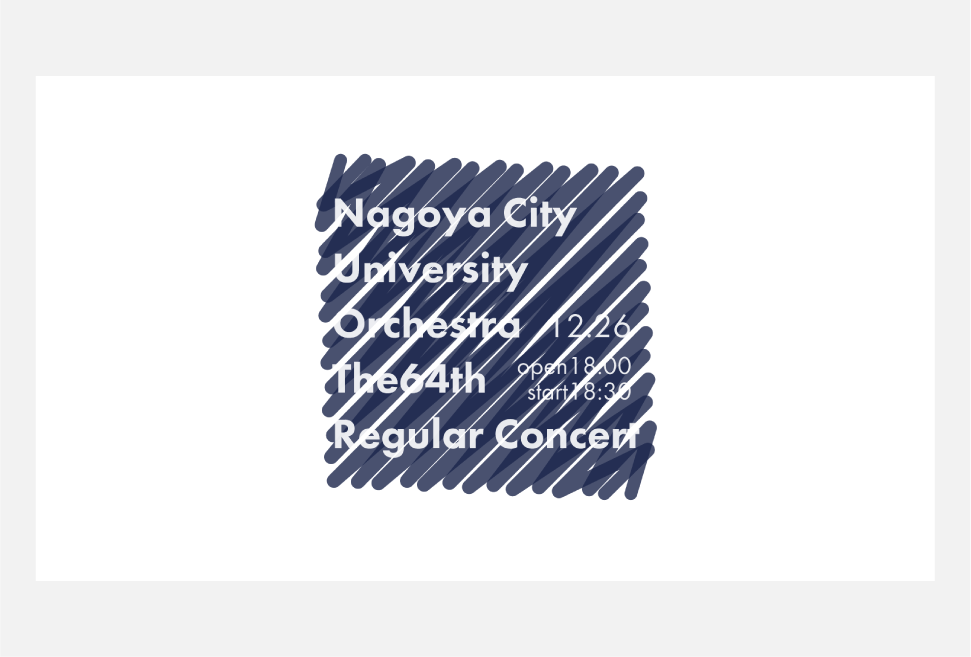
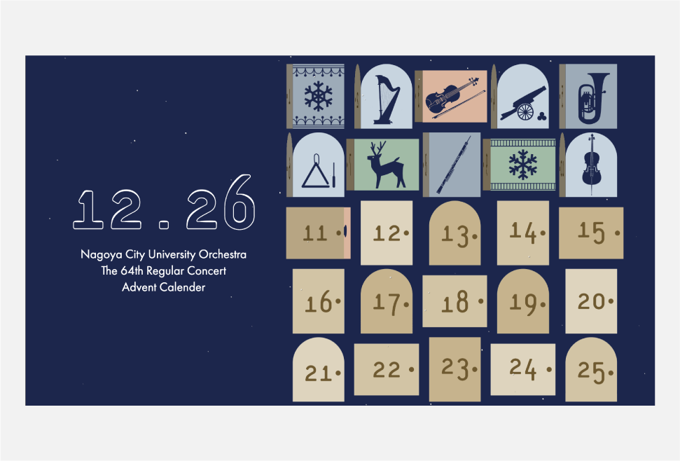
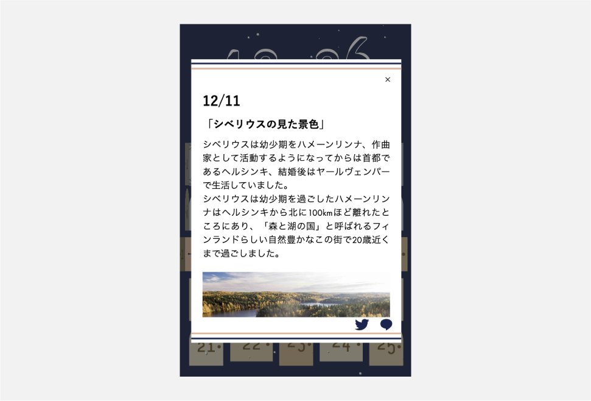

works

- 
- 
- 
曲についての話を紹介するサイト
名市オケ64th定演アドベントカレンダー
制作期間
2019.11-2019.12
担当範囲
すべて（企画、デザイン、コーディング）
使用言語・ツール
HTML / CSS / JavaScript / jQuery / Illustrator / Photoshop
制作背景
自分の所属する管弦楽団の定期演奏会のために、他の近隣の大学の管弦楽団がやってないような、何か変わった企画をしたいと思い作りました。
演奏会が12月26日でクリスマスが近いということでアドベントカレンダーを作り、定期演奏会で演奏する曲に関係する話が毎日1つずつ読めるようになっていくようにしています。
ベースの色は演奏会のポスターの色に合わせて、季節感を意識して雪が降ったり文字の上に積もったりするようにしました。
カレンダー部分の扉にアニメーションをつけて、今日の日付のところは少しだけ開いたり閉じたりするようにし、記事を読むときには扉が開くようにして実際のアドベントカレンダーを開けるときに近い動きになるようにしています。
記事を読むページにはツイッターやラインの共有ボタンを設置して、サイトを共有できるようにしました。
記事の内容も自分で調べて書いていて、演奏を聞きに来る人だけではなく、演奏する団員自体にも曲についてもっと知ってもらいイメージを膨らませることで、より良い演奏ができればいいなという思いで書いています。